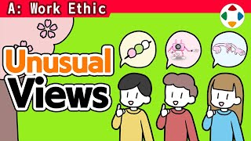
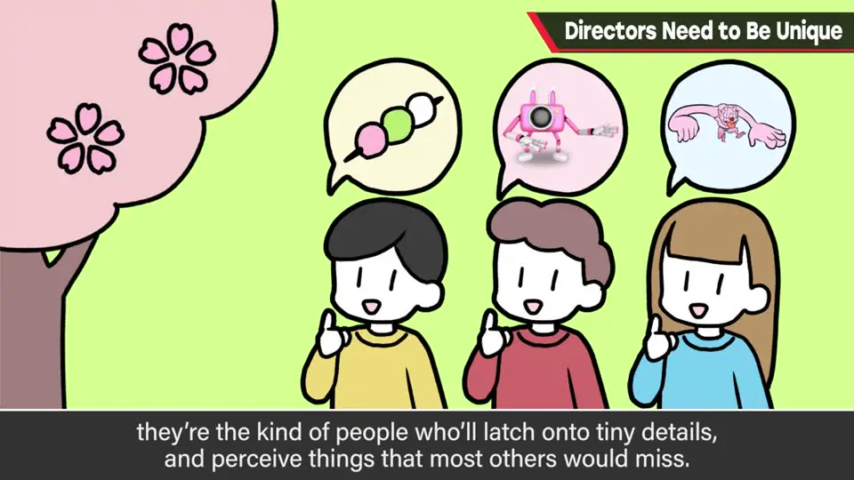
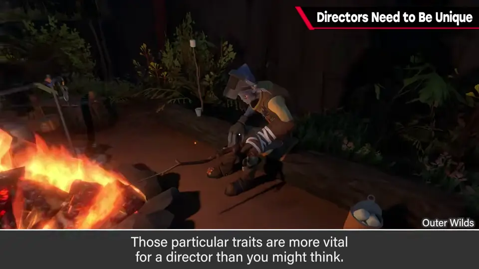
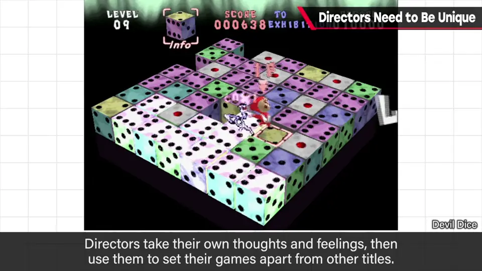
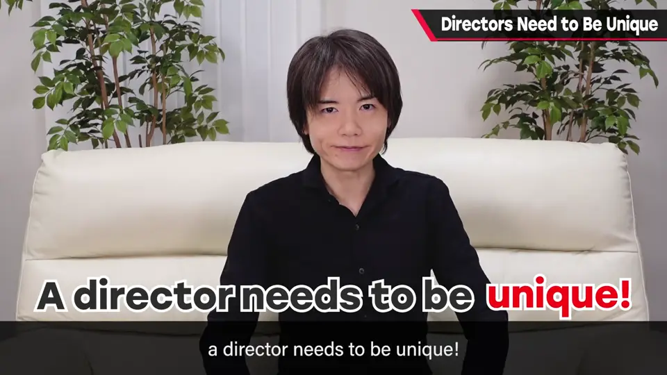

速览
「怎样才能当上总监？」樱井认识很多能干的总监，他们做的事完全不同，共同点不多。硬要说一个：对某种感觉很敏锐，看到的东西和别人不同——不放过细微之处，在影像、游戏性、动作、故事、人的感受方式等方面都是如此。所以总监稍微有点怪是好事。但也需要一定的平衡感和从自身发出的强有力的输出；完全不擅长与人对话的总监不太常见。结论：总监需要有个性。
1. 能干总监的共同点：看到别人看不到的 0:01
「怎样才能当上总监（Director）？」是常见问题。樱井说他认识很多能干的总监，他们做的事彼此完全不同，共同点并不多。
如果硬要说一个共同点：对某种感觉很敏锐，看到的东西和别人不同。和他们聊天时，常听到樱井自己完全没想到的见解。
- 看一样东西或「一扫而过」时，不放过细微之处，能感受到与他人不同的东西——这对总监比想象中更重要。
- 适用于影像、游戏性、动作、故事、人的感受方式等一切方面。
- 所以总监稍微有点「怪」是好事。


2. 也要有平衡感——总监需要有个性 1:27
但要避免误解：也需要一定的平衡感；大概也需要从自身发出的强有力的输出（表达能力）。完全不擅长与人对话的总监，或许有，但不太常见。
做出与众不同游戏的总监，就像游戏本身一样，被要求的是个性和只有这个人才有的东西。结论：总监需要有个性。


自测题
1. 樱井认为能干的总监硬要说有什么共同点？
对某种感觉很敏锐，看到的东西和别人不同：不放过细微之处，能感受到与他人不同的东西。 0:38
2. 「总监稍微有点怪是好事」——樱井补充了什么以免误解？
也需要一定的平衡感，大概也需要从自身发出的强有力的输出（表达能力）；完全不擅长与人对话的总监不太常见。 1:27
3. 本期的结论是什么？
做出与众不同游戏的总监，像游戏本身一样，被要求的是个性和只有这个人才有的东西——总监需要有个性。 1:56